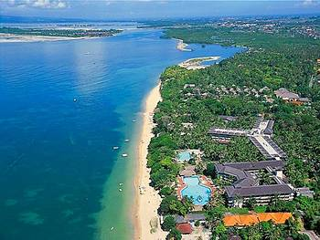

Bali
Sanur Beach
Greet the sun as she gradually rises from below the horizon radiating the most brilliant colors over Sanur Beach, while the soft white sands embrace the oncoming waves: a perfect picture of a beautiful sunny morning, where nature displays her fascinating features at the tranquil, laid back retreat of Sanur, east of Denpasar, capital of the fabled island of Bali. Located just 25 minutes from the international airport, 30 minutes from the Kuta area, and 15 minutes from downtown Denpasar, Sanur is renowned as Bali's first beach resort and is actually where the early tourism industry grew on Bali. Sanur is also recognized as the largest village in Bali where its people - as with the rest of east Bali- are particularly friendly, welcoming and accommodating. Despite the locals’ activities and the abundance of restaurants and accommodation, it is surprising how un-crowded and peaceful Sanur is. There are many activities to try as well as beach resorts and restaurants but these are all spread along a long coastline, creating a secluded feeling where the action goes unnoticed to sunbathers and loungers on the unspoiled beaches that continue to maintain the traditional Balinese feel. Sanur beach is a long stretch of beautiful white sand lined with palm trees that shade dreamy footpaths, market stalls and relaxed beach cafes. Along the beach are traditional Balinese Bale (raised shaded open verandas for lying down or relaxing). Most are no longer in use although a few are sometimes occupied by fishermen who fish in these waters. The waters of Sanur are protected by a long string of offshore reefs, creating large, warm shallow, safe lagoons that are perfectly clear and excellent for swimming, snorkeling and a whole array of water sports. Surfers will be pleased to know that the reefs around Sanur produce some of the best waves in the world in the right conditions although they can be very shallow at low tide. But there are more consistent waves beyond the reefs good for surfing. Sanur is also the launching pad for visitors who want to dive and explore the splendors of the nearby island of Nusa Lembongan. Nusa Lembongan is approximately 8 square km in size, and is one of three neighbouring islands, the others being much the larger Nusa Penida and tiny Nusa Ceningan. Many areas around the island are good for diving and snorkeling, with abundant marine life and healthly corals. Surfing can get a bit crowded, but the waves are good. There are several white sand beaches away from the main centers which are virtually never crowded. As a place where tourism first flourished in Bali, Sanur has some of Balis’ historic hotels. Built in 1965, the Inna Grand Bali , formerly called Bali Beach Hotel, was the first five star and the only high rise hotel in Bali. After its construction a new law came into force where in Bali no hotel may be built higher than a coconut tree. Here are also the Sanur Beach Hotel (Initialy called Hotel Garuda) and the Bali Hyatt. All of these hotels still operate until today with that certain touch of modernity that offers that nostalgic ambience for those who knew Bali decades ago before the onrush of tourism. But even today Sanur still maintains that pleasant ambience with places shaded by high and age old trees that continue to radiate the serene magic of Sanur.
Kuta Beach
Once a sleepy village with a quiet, beautiful sweep of beach, Kuta today has become a popular beach destination in its own right, alive with tourists from all over the world, swimming, surfing or sunbathing by the beach. Others, casually dressed in shorts, T-shirts and flip-flops stroll along its main road, shopping around or enjoying meals at its many open air restaurants. When in Kuta you know that you are in a holiday town, and people here are in a holiday mood. Back in the 1960’s the only hotel was the Kuta Beach Hotel, but soon without much planning, Kuta developed rapidly into a haunt for surfers and backpackers, while the high end market preferred to stay at the more sedate Sanur village on the opposite side of the peninsula. With time, Kuta’s popularity grew, and shops, restaurants, discos hotels, - from the simple to the exclusive - sprang up along the main road from Kuta to Legian, catering to the ever increasing holiday crowd, that not only included international tourists but also domestic visitors from Jakarta and other big cities. On the beach, people enjoy parasailing, banana boat trips or swimming Women offer traditional Indonesian massage on the beach, others are seen plaiting hair. Before sunset, crowds rush to the beach waiting to watch Kuta’s legendary sunsets. Then as darkness falls, Kuta’s nightlife starts to throb with loud music from bars and restaurants, while shops stay open till late at night. Kuta’s main attraction is that everyone can enjoy the town without any prescribed dress code. Many famous international bands and celebrities have voluntarily played and sung here enlivening the fun, dance and music scene of Kuta. One poignant reminder, however, of the tragedy that befell Kuta is a monument located next to the present Paddy’s café. The monument is erected in memory of those killed during the fatal October 2002 bomb terrorist blasts. The blasts killed more than 300 people, mostly Australian tourists and Indonesian workers.
Nusa Dua
Nusa Dua is a special, self contained tourism estate, built comprising a large Bali Convention Centre and complemented with super-de-luxe resorts. Here you will find some of the world’s best known hotel names, like the Grand Hyatt, the Westin Resort, the Laguna Resort & Spa, the Nusa Dua Beach Hotel & Spa, Melia Bali, Nikko Bali, Novotel Nusa Dua, and the Ayodya. The sprawling hotels offer beautifully manicured gardens, fantastic panoramic views of the blue ocean beyond, long stretches of white beaches and swaying palm trees. And, adhering to the architectural rule here, no hotel is built taller than a palm tree, making Nusa Dua a truly tropical dream paradise. Some twenty years ago Nusa Dua was a barren and deserted area, where just a few fishing communities lived. A French company entrusted with compiling the Bali master plan recommended that Bali’s unique culture be protected from an undiscriminating onslaught of tourists to the island. In order to do this, the bulk of hotels and tourist facilities must be kept apart from the essential way of life and culture of Bali. Thus the development of the Nusa Dua resort was envisaged in this barren area, which would not encroach on the lush agricultural land of Bali, and provide routes inland to access the myriad attractions that the island offers. Today, Nusa Dua is Bali’s top venue for important international conventions. The historic December 2007 Climate Change Conference was held here, as are international Summits participated by heads of state.
Ubud – Ubud Monkey Forest
If you’re looking for peace and quiet, then Ubud is the place to be. Steeped in culture and enhanced by magnificent vistas, Ubud offers a respite from the humdrum of your busy life. In the past, Ubud was just a small village, but now it has grown into a thriving yet laid back cosmopolitan community. Ubud pampers visitors in body and soul. Fine dining restaurants and spas here will delight and relax the senses. A walk through the lush paddy fields, watching colourful processions of women gracefully balancing piles of fruit offerings on their way to the temple, are lasting impressions and simply breathtaking. The best way to observe Bali’s traditions and culture is through mingling with the locals and watching their daily routine. In this town, you can visit the temples and villages that have remained relatively unchanged through the years. Art galleries are also abundant. Masterful paintings and sculptures are waiting to be admired and appreciated, for who knows you may find the perfect painting or statue to grace your own living room? This region is steeped in history and culture. Many remains from the old kingdoms of Bali can be found here, and unique arts and crafts are just waiting to be discovered. Known for its tranquillity, Ubud offers several natural retreats. The lush, green views and cool atmosphere makes morning and afternoon strolls most pleasant. It’s no surprise that many people come to Ubud for a day or two and end up staing longer, drawn in by the culture and activities on offer. Ubud is where famed Elizabeth Gilbert found peace and her love as written in her best selling memoir “Eat, Pray, Love”, which is now made into a film featuring Julia Roberts. Indonesia’s ownn celebrity Christine Hakim plays Wayan, the local alternative healer. The Ubud Monkey Forest is a nature reserve and temple complex in Ubud, Bali. It houses approximately 340 monkeys which are known as long-tailed Macaques (Macaca fascicularis). There are four groups of monkeys each occupying different territories in the park. The Sacred Monkey Forest is a popular tourist attraction in Ubud, and is often visted by over 10,000 tourists a month. The Monkey Forest is owned by the village of Padangtegal and village members serve on the Monkey Forest's governing council. The Padangtegal Wenara Wana Foundation manages the Monkey Forest and serves to maintain its sacred integrity and to promote the sacred site as a destination for visitors.
Uluwatu
Uluwatu is the most famous wave of Bali. There is always some swell here so it's also always crowded. The spot offers several waves which are working with different swells and tides: The Peak: best at mid and high tide. Closes out at low tide. In front of the cave. it's the most consistant. Short and powerful waves, tubes. The take off is moving. It works from 1ft to 8ft. The most crowded. One of the sections closes more than the others. Racetracks: 100 meters further. fast wave, a lot of sections with easy tubes. Best at low tide and at 6ft. Can hold bigger swell. On the right tide and the right swell, "The Peak" connects with "Racetraks" (you need to be a good tuberider). Over 10ft, Racetracks breaks until "The Corner". Inside Corner: best at mid and low tide with a 6ft swell. At first, it's a fun wave and the final bowl is a tube. Don't do a cutback just before the bowl! Take plenty of speed, stay high in the face and trim. You will pass the tube. Outside Corner: the REAL Uluwatu. Works only with big swells (>8 feet) and at low tide. The lower is the tide, the better is the wave. Take at least a 7' board. It is a succession of long walls good for carving and, sometimes, a beautiful final tube. The length is around 300 meters. Temple: less surfed. Two waves in fact ("Outside temple" and "The Bombies"). Only for experts because the water is very shallow. For them, it is a incredible tube when it works.

Pura Besakih
Rising majestically on the western slopes of Mount Agung, and referred to as the Mother Temple of Hindu Bali, is Pura Besakih, or the Besakih temple, covering a vast area that offers breathtaking mountain scenery surrounding this beautiful and artistic temple complex. Facing Mt. Agung’s highest peak, believed to be the abode of the gods, and located at an altitude of 900 meters, Pura Besakih is built in the village of Besakih, in the eastern part of Bali. The name Besakih comes from the word “Basuki”, derived from the word “Wasuki” which means Salvation in the classical Sanskrit language. Whereas, in the Samudramanthana mythology, the same name “Besuki” in fact refers to the Dragon-God “Naga Besukian”, who inhabited Gunung Agung, the main volcano in Bali. This grand temple complex has been revered as a holy place since ancient times. The first recorded mention of its existence comes from an inscription dating back to 1007 AD. It is known that since the 15th century Besakih was regarded as the central temple of Hinduism in Bali. Pura Penataran Agung, or the “Great Temple of State” is the center of the temple complex and is is Bali’s main place of worship, a complex comprising twenty-two temples on six rising terraces set on parallel ridges. This complex expresses the essential belief of the Balinese known as Tri Hita Kirana, meaning that life on earth must be lived and kept in balance and harmony between man and God, man and society and his fellow human beings, and man and his natural environment. During a full moon, Balinese and pilgrims throng to the temple. During the festival of Odalan, the temple is most elaborately decorated. Odalan is celebrated on every 210th day. Away from the loud parties of Kuta Beach, leaving the thrilling waves of Uluwatubehind and the modern facilities of Nusa Dua, then traveling beyond enchanting Ubud, a visit to Pura Besakih is truly a spiritual experience into the heart of Balinese religious and cultural life.
Mount and Lake Batur – Kintamani, Bali
The mountainous region around Kintamani, centering on the spectacular volcanic caldera of Mt Batur with its deep crater lake and bubbling hot springs, is rugged with a high and wild beauty. Wonderful mountain air and dizzying views in all directions, as well as several important temples, are what makes Kintamani one of the most memorable stops on the Bali tourist itinerary. Mount Batur is actually just a small volcano, but its setting is in the heart of a huge crater 14km in diameter. Adjacent to the volcano is the large crescent-shaped Batur Lake, all surrounded by the high walls of the crater rim. The sheer size of the crater conjures up images of the massive eruption of the original Mount Batur that occurred tens of thousands years ago. The volcano is still active today as Balinese all over the island who still remember the great eruption of 1917 will testify. It claimed thousands of lives and destroyed hundreds of temples. Old people might tell you this was "the year when the world shook" Other eruptions have taken place since, forcing the local population to be relocated, along with several of their temples including one of the main Bali temples, Pura Ulun Danu. Initially inside the huge crater, this temple has been relocated to the top of the ridge overlooking it. Here it now offers an impressive view of Mount Batur.
Tanah Lot
To many people, Tanah Lot epitomizes the romantic island of Bali. This is the image of Balinese temples on the rock facing the wide open ocean, perched high above the crashing waves below, with as background the colorful sky at dusk, lit by the slowly disappearing setting sun. Located in the sea some 300 meters from shore, the huge rock of Tanah Lot is reachable overland at low tide. On its northern side stand two Balinese temples built on an overhanging cliff which connects the islet to the shore. Underneath the rock are caves that are inhabited by sea snakes, believed to be the guardians of the temples. The Tanah Lot temples form an inseparable part of the Dang Kahyangan temples, the six most holy temples on Bali, but here believers pray to the god of the sea. On the west side of the rock is a spring which the Hindus believe to be holy water and the reason why the temples were built on this rock. Tanah Lot is derived from the words “Tanah” meaning a rock or land, while “Lot” or “Lod” means south or the sea. Therefore Tanah Lot means the Rock by the Sea. The temples of Tanah Lot were said to have been built in the 16th century by the Hindu priest Bawu Rawuh, better known as Danghyang Nirartha, who came from the kingdom of Majapahit in East Java, and travelled to Bali to spread the Hindu religion. Arriving at this spot he was inspired by the sacredness of the place and advised his followers to build the temples at this location. According to legend it was Danghyang Nirartha who successfully strengthened the belief of the local population in the Hindu religion. However, in the process, another local religious leader named Bendesa Beraban, felt competed since many of his followers turned to Danghyang Nirarta. Seeing this, Bendesa ordered Danghyang Nirartha to leave the area of Tanah Lot. Nirartha agreed but before leaving, he gathered all his powers, lifted the rock, and moved this further out to sea, building temples on this rock. He then transformed his shawl into snakes to guard the temples. Upon seeing this, Bendesa Beraban was awed and became a follower of Danghyang Nirartha. Until today the sea snakes still make the caves their habitat. They have a flat tail like a fish and are black in color with yellow stripes. On certain days when the sun sets towards the north one can see the rays shining right onto the caves.
The Giant Garuda Wisnu Kencana (GWK) Statue
Situated on a limestone plateau in south Bali, high on the Bukit Peninsula, 300 meters above Bali’s shoreline, is the Garuda Wisnu Kencana Cultural Park that offers a grand view on Jimbaran Bay and Kuta to the west, and Tanjung Benoa andSanur to the east with the imposing Mount Agung and Mount Batur as its background. Focal point of this Cultural Park is the magnificent Garuda Wisnu Kencana statue, that will reach a total height of 126 meters, weighing 3,000 tons, that will be taller than the Statue of Liberty in New York. The statue depicts Lord Vishnu mounting the mythical Garuda bird, as manifestation of the conscience of Amerta, the Perennial Goodness. At present, the 23 meters high head and torso of Lord Vishnu already stands in place. Still in construction is the giant Garuda Bird. When completed, both the head and torso of Lord Vishnu will be placed on the Garuda bird, which together will reach 75 meters high with the Garuda wings spanning 64 meters wide. The entire statue will then be placed on top of a 60 meters pedestal, so that the total structure will stand 126 meters high. The statue’s structure is made of copper, brass, steel, with gold mosaic placed on specified parts. This incredible monument will then be visible from a 20 Km distance, and can be clearly viewed from Kuta, Sanur, Nusa Dua, Uluwatu and Tanah Lot. Visitors will be able to ascend inside the statue to its chest level. From that height, visitors will look down upon the most panoramic view of the fabled island of Bali. Unfortunately, work on the statue had stalled 16 years, but will now finally be resumed, which will take three years to complete, said I Nyoman Nuarta, Indonesia’s maestro sculptor and creator of this iconic statue. Having been postponed since 1997, this monument is projected to become an exceptional landmark for Indonesia’s tourism in this modern age. Conceptionalized by sculptor I Nyoman Nuarta, actual work on the statue is, nonetheless, not undertaken in Bali, but in the artist’sworkshop, NuArt Studio, in the mountain town of Bandung in West Java, involving many artists and experts from various fields . Born in Tabanan, Bali, in 1951, I Nyoman Nuarta is one of the Indonesia’s outstanding pioneers in the new visual art movement since 1976. While still at college, in 1979 Nyoman Nuarta already won Indonesia’s Independence Declarators Statue Competition. Until this day, Nuarta has created over a hundred statues which all reflect modern art in sculpture which follows the naturalistic style. Most of his statues are made of copper and brass. At the moment, about 200 workers are working in NuArt Studio in the construction of this magnificent statue. Upon completion, the statue will be sent in parts from Bandung to Bali to be reassembled on the site at the Bukit Peninsula. As many as 13 modules of the project are currently being transported, which are expected to reach Bali late July or early August 2013. The process of reassembling will cost around IDR157 billions, even more expensive than the work on the statue itself which took IDR150 billion. It will take about 400 huge trucks to transport parts of the 3,000 tons statue from Bandung to the site in Bali. Modules will be transported in stages over the course of three years. The Garuda Wisnu Kencana statue and park was initiated by members of the Garuda Wisnu Kencana Foundation, a group of influential people, that include Joop Ave, then Minister for Tourism and Telecommunications , IB Sudjana, Minister for Mining and Energy, I Made Mangku Pastika,current Governor of Bali, sculptor I Nyoman Nuarta, and a number of businessmen. Garuda Wisnu Kencana Cultural Park Meanwhile, the extensive Cultural Park where the statue stands is already operating in full swing. It is a favorite venue for large convention dinners and functions able to seat hundreds of delegates, as well as stage star-studded concerts that attract the public by the thousands. Among which was the band Iron Maiden that drew crowds and tourists from throughout Bali. GWK Cultural Park covers more than 240 hectares of land that was once an abandoned and unproductive limestone quarry. The GKW Cultural Park is already an attraction for both local and foreign visitors, the Lotus Pond surrounded by gigantic pillars seats 7,500 persons. The Street Theater where fashions shows and parades are held packs 2,500, the Amphitheater seats 800, and there is also the 200 square meters Exhibition area, and the Indraloka Garden, which is a favorite for weddings and dinners. There are Balinese dances daily, Indonesian cultural performances and other activities. In the Park is the Jendela Bali Resto, which offers a fantastic view on Bali’s south coast, especially for romantic evening dining and delectable Bali cuisine. The restaurant is also open for lunch. Since the Park is so extensive there are fun rides available on Segway 2 wheeled vehicles that can take you around the park. The GWK Cultural Park is open from 8.0 am to 10 pm. Entry is Rp. 80, 000 for foreigners, and Rp. 40,000 for Indonesian nationals, with special discounts for Indonesian children at Rp. 30,000.